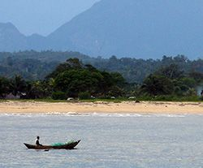
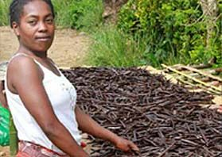
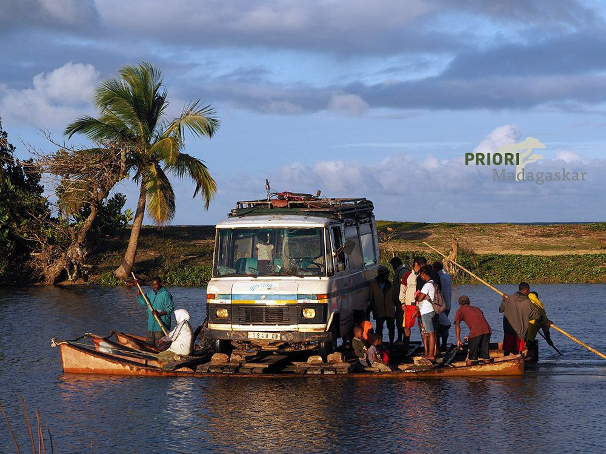

SAVA, die Region im Nordosten Madagaskars, wird auch das Vanilledreieck genannt. Etwas vergessen und doch so variationsreich – das macht diese grüne, tropische Gegend aus. SAVA setzt sich aus den Anfangsbuchstaben der vier wichtigsten Städte der Region zusammen: Sambava, Antalaha, Vohémar sowie Andapa. Hier befindet sich die weltweit wichtigste Zone für den Anbau von Vanille.

SAVA: Vanille wohin die Nase riecht
Der Vanille begegnet man auf Reisen in SAVA auf Schritt und Tritt. Der Nordosten Madagaskars atmet den Duft der Vanilleschoten und ist mit diesem schwarzen Tropengold das ganze Jahr beschäftigt: Plantagenunterhalt, Ernte, Verarbeitung. Dann machen sich die schwitzenden dunkelbraun-schwarzen Schoten Madagaskars auf zu ihrer Reise hinaus in alle Erdteile sowie hinein in die Gastronomie von Küchen aller Niveaus.

Natur in tiefem Grün, satten Farben sowie in völliger Abgeschiedenheit
Wie ein satter Naturpfropfen sitzt der Marojejy-Nationalpark inmitten von SAVA und lässt sich von seinen Hügeln umwallen. Der Weg hinauf zum 2132 Meter hohen Gipfel – einer der höchsten Madagaskars – ist ebenso eine Reise durch verschiedene Vegetationszonen, wie auch eine Tour durch die Erdgeschichte. Fotografen sowie Tierliebhaber kommen auf ihre Kosten, ebenso wie Pflanzenkundler und Wanderfreunde. Der oft wolkenumhüllte Marojejy hat noch so manches Geheimnis und unentdeckte endemische Art in seinem tropisch grünen Pflanzenmantel versteckt.
Kleine Städte mit viel Charme
Die kleinen Städte Andapa sowie Antalaha sind bescheidene Perlen am Indischen Ozean. Abgeschieden und ruhig, ab des üblichen Madagaskar-Reiseplans bieten sie Reisenden die Möglichkeit zu verweilen und zu sehen, wie sich das Leben am Strand, auf dem Markt und in den Strassen abspielt. Beschaulich geht es hier zu, und doch warten immer wieder Überraschungen.
Im Hinterland sammelt ein Fluss Wasser aus Tälern, deren Flanken mit Vanilleplantagen, Litschibäumen, Kaffee und Pfeffer bedeckt sind. Auch hier tarnen tausend Farbnuancen die Pflanzenwelt und laden zu Spaziergängen ein.
Die sehr isolierte Region SAVA lohnt immer einen Besuch. Reisen hierher sollten dabei mit Zeit im Gepäck geplant werden. Der Flugplan aus Madagaskars Hauptstadt Antananarivo hierher ist so stabil wie die Börsenkurve und daher ist ein satter Zeitpuffer unbedingt einzuplanen. Es gibt keine seriösen Schiffsverbindungen dorthin und die einzige Zufahrtsstrasse von Süden ist, nunja, sie ist wie sie ist…unvergesslich.

Madagskar. Fähre von Antalaha nach Cap Est.